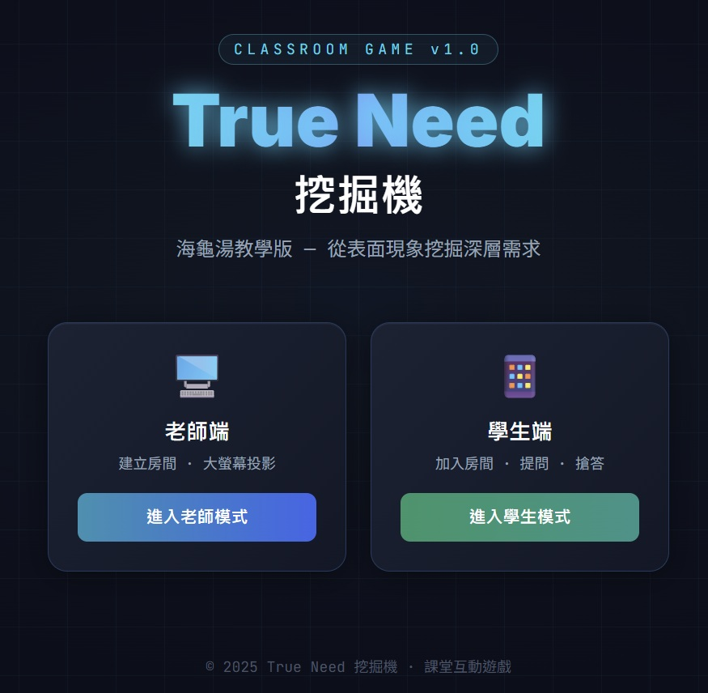
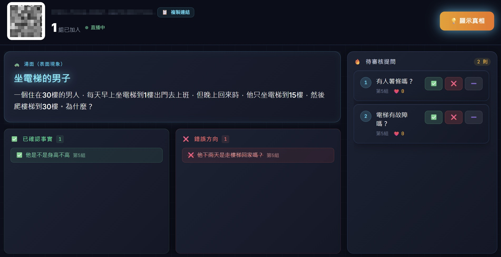
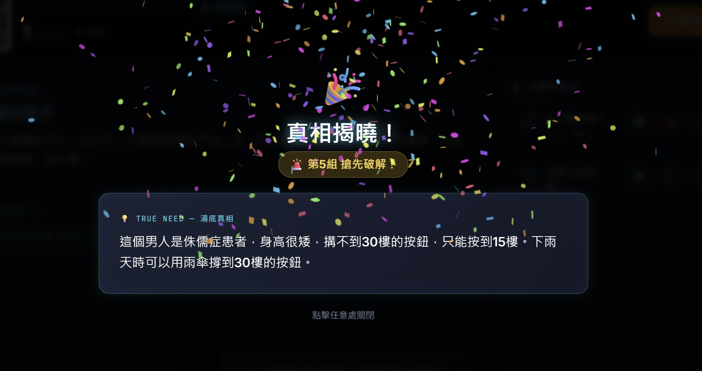

教學遊戲
True Need 挖掘機
2026.03 · 個人專案

FIG. 08 — 產品主畫面
關於這個作品
把「海龜湯」謎題遊戲改造成設計思考課的核心教具。
老師設定一個謎面（表面現象），學生只能問是／否問題，在對話中一層層剝開表象、挖掘真正的需求或動機——這正是用戶研究「5 Whys」思維的遊戲化版本。
教師端大螢幕顯示所有問題與答案，學生透過手機提問與搶答。Next.js + Supabase 支撐即時同步，Cyber 風格介面讓課堂氛圍有別於一般講授。
作品亮點
海龜湯機制自然模擬 5 Whys 深度提問路徑
學生手機提問，教師即時回答是/否/不相關
課後檢視問題脈絡，直接討論需求挖掘邏輯
操作畫面

